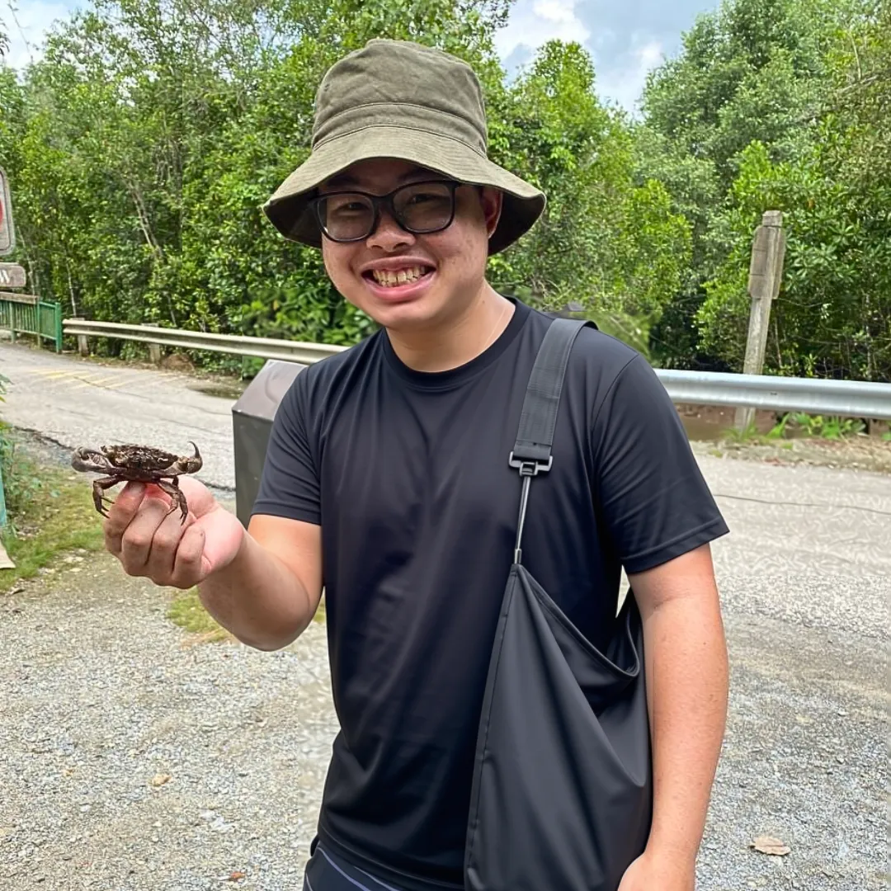

Leadership
Leadership profile 01
Full name, role and brief biography to be added.
Leadership and advisors supporting our work with people, plants and places.
Meet the people leading our work in nature-based learning, plant-centred engagement and community wellbeing.

Full name, role and brief biography to be added.

Full name, role and brief biography to be added.
Our advisory team supports us with relevant knowledge and feedback.
Full name, area of advice and brief biography to be added.
Full name, area of advice and brief biography to be added.
Full name, area of advice and brief biography to be added.
Share your objectives and participant needs. We will work with you to plan a suitable programme.